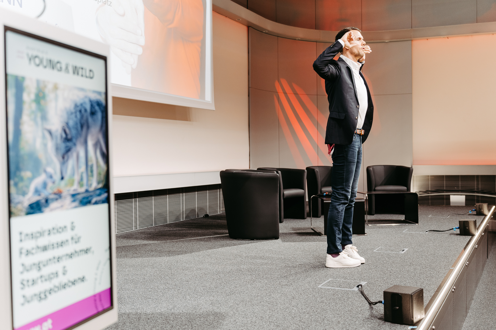

Zwischen innerer Klarheit, körperlicher Präsenz und echter Verbindung.
Ich arbeite mit Führungspersönlichkeiten, die in komplexen und leistungsgetriebenen Umfeldern Verantwortung tragen.
Dort, wo Entscheidungen Konsequenzen haben. Dort, wo Dynamik hoch ist. Und dort, wo Führung nicht nur organisiert, sondern wirkt.
Im Zentrum meiner Arbeit steht die Frage:
Wie bleibt Führung klar, präsent und verbindlich – auch unter Druck?
Ich arbeite nicht über Methoden, sondern über Zustand, Wahrnehmung und Wirkung.
Führung beginnt für mich nicht bei Tools oder Modellen, sondern bei der Qualität der inneren Klarheit.
Diese Klarheit zeigt sich:
Mein Fokus liegt darauf, Führung wirksam zu machen – ohne zusätzliche Komplexität oder Aktionismus.
Meine Arbeit verbindet unterschiedliche Welten, in denen Leistung, Präsenz und Zusammenarbeit entscheidend sind.
Als Geschäftsführer eines Sportverbands trage ich operative, strategische und personelle Verantwortung. Ich kenne die Realität von Führung aus eigener Erfahrung – nicht aus Modellen.
Über viele Jahre im internationalen Leistungssport habe ich gelernt, unter Druck präsent zu bleiben, Entscheidungen zu treffen und im Team zu funktionieren.
Seit über zehn Jahren begleite ich Menschen in Führungsverantwortung – in Einzelsettings, Gruppenformaten und Organisationen.
Ich arbeite als Sparringspartner – klar, strukturiert und verbindlich.
Nicht als klassischer Coach. Und nicht als externer Berater mit fertigen Lösungen.

Wirksame Führung entsteht nicht durch Kontrolle, sondern durch Klarheit und Verbindung.
Nicht durch Lautstärke, sondern durch Präsenz.
Und nicht durch mehr Aktivität, sondern durch bewusste Entscheidungen.
Mich interessiert, was Führung wirksam macht – besonders in Situationen, in denen es darauf ankommt.
Wenn Druck steigt. Wenn Entscheidungen komplex werden. Und wenn Zusammenarbeit herausfordernd wird.
Wenn Sie das Gefühl haben, dass eine Zusammenarbeit sinnvoll sein könnte, dann lassen Sie uns in den Austausch gehen.